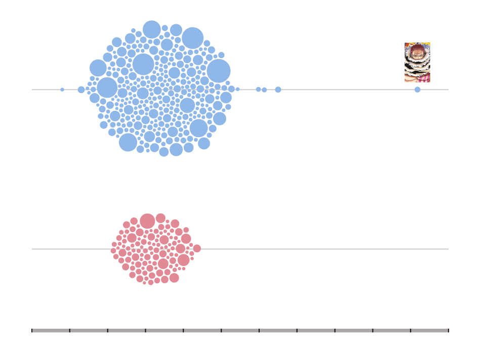
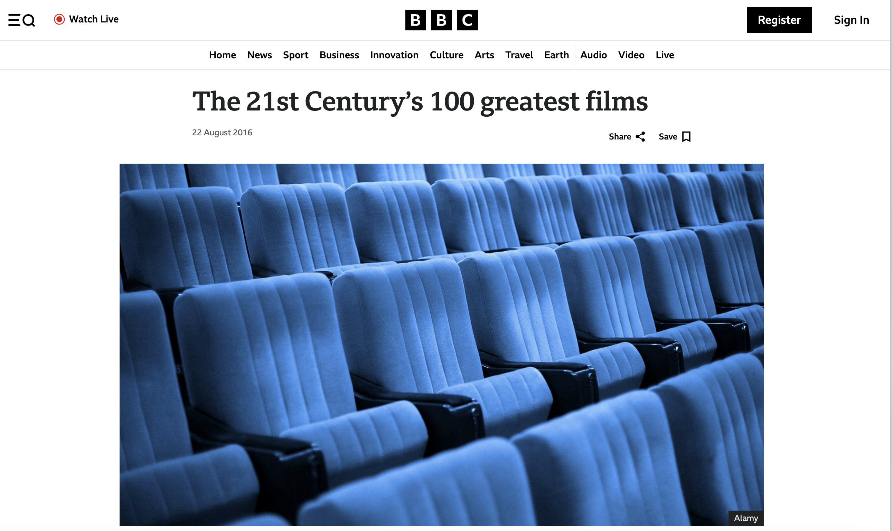

About Me
Hi there! This is Yiren Lu. Welcome to my website. This is the garden of my inner world. I was an anthropologist with a background in statistics before transitioning into journalism, so I explore the human world through a quantitative lens. Interested in visual storytelling and data viz.
Feel free to contact me!
How Tall Are They?
Gender representation in animation, movies, and TV shows has long been a central concern among critics of popular culture. This story takes a data-driven approach to the conversation by analyzing the most beloved characters on MyAnimeList.
California's Zero-Waste Dream Meets a Landfill Nightmare
California has long been troubled by its trash issues. The state has signed a series of bills aiming for a zero-waste plan in the coming decades. But beyond the millions of tons of waste that go to recycling or composting, landfills remain a long-term problem.

Are Rich People Shopping Differently Online?
This article used a dataset from the Harvard Dataverse to study the shopping behavior of Amazon customers. The dataset contains information on 10,000 Amazon customers, including their age, gender, income, and purchase history.
Post-COVID Reality: Income Rises But Pessimism Continues
Real Income VS Economic Confidence index. Comparing real disposable income and economic confidence index during Trump's last administration and Biden's administration.

What's Standing Between Us and Proof of Bigfoot?
Use mapping tools to visualize the caveats in Bigfoot research and sightings.
Why the 2024 Paris Olympics Marked the Triumph of US Female Athletes
Comparing percentages of medals obtained, average medal counts per person, and total numbers.


BBC Movie Menu
An interactive map based on BBC's 100 movie critics' recommendations.
Popular Color Tracking
A website that tracks emerging color trends.